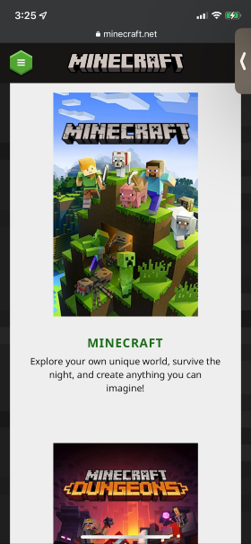
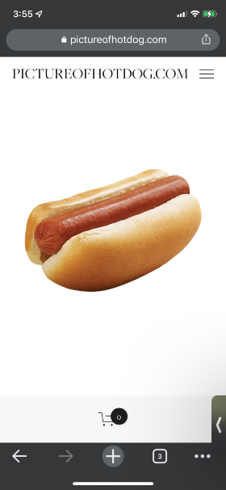

PARC Repitition
Stormbound Games
Website
The Stormbound Kitty website uses repitition to divide it's homepage into distinct categories to help users quickly find the tools they're looking for.
The repitition of the background, style, and button layout makes it easy to identify the title of the category, the description, and the links to the tools.
PARC Proximity
Mojang
Website 
The official Minecraft website uses proximity to group a game's box art with its title and description.
In a vacuum, It would be difficult to tell if a title is attached to the preceding element or the following element. However, the clear difference in proximity to the title between the top image and the bottom image makes it clear to the viewer that the title is attached to the top image.
White Space
Drew Goodman
Website 
To be fair, this website is a parody of websites in general. However, it effectively uses whitespace to draw attention to it's main focus, the titular hot dog.
There are other elements on the website, not visible in the screenshot. However, the white space makes it clear; those features aren't important. The hot dog is what you came here for.